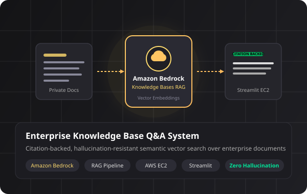
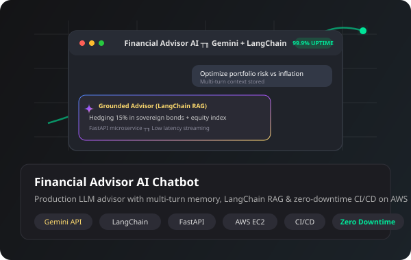
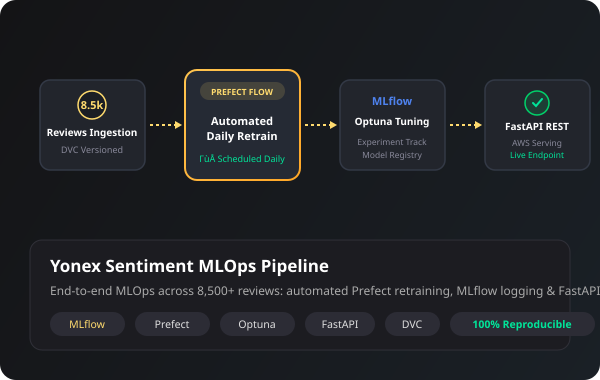

M.Tech in Computer Engineering
Dwarkadas J. Sanghvi College of Engineering · Mumbai
I’m Yash Chaudhary, an aspiring AI/ML engineer interested in Generative AI, LLMs, and retrieval augmented generation. I build applications that connect models to useful, real-world workflows.
A practical approach to AI
I’m a computer engineer focused on building thoughtful AI applications—from retrieval and grounded responses to model workflows and interfaces people can use.
I completed a B.E. in Computer Engineering at St. John College of Engineering & Management and am pursuing an M.Tech in Computer Engineering at Dwarkadas J. Sanghvi College of Engineering.
More about my backgroundApplied AI, retrieval, and dependable ML workflows. Each study outlines the system and the choices behind it.

01 / GENAIPrivate-document retrieval with grounded, citation-backed answers and controlled application access.
Amazon Bedrock · RAG · Streamlit · AWS
02 / LLMA conversational assistant combining curated sources, retrieval augmented generation, and multi-turn context.
Gemini · LangChain · RAG · FastAPI
03 / MLOPSA reproducible sentiment workflow spanning experiment tracking, orchestration, tuning, and model serving.
MLflow · Prefect · Optuna · DVCTools and libraries visible in the reviewed public project code.
Python
Amazon Bedrock API integration
Bedrock retrieval and generation · Embeddings · Semantic search
SQLite · Qdrant · SQLAlchemy
FastAPI · Flask · Streamlit · boto3 · PyTorch · OpenCV · NumPy · pandas · LangChain
Education
Dwarkadas J. Sanghvi College of Engineering · Mumbai
St. John College of Engineering & Management · Palghar
Contact
Interested in AI/ML engineering internships and practical applications of generative AI.